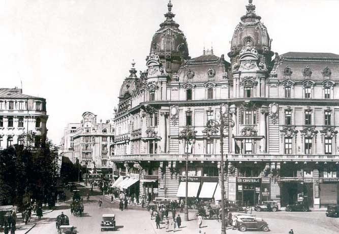
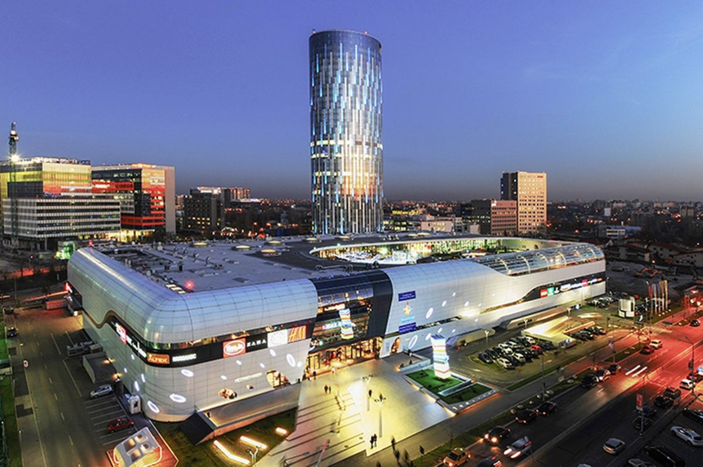

Bucharest is the capital and largest city of Romania, as well as its cultural, industrial, and financial centre. It is located in the southeast of the country, on the banks of the Dâmbovița River, less than 60 km north of the Danube River and the Bulgarian border. Bucharest was first mentioned in documents in 1459. It became the capital of Romania in 1862 and is the centre of Romanian media, culture, and art. Its architecture is a mix of historical (Neoclassical and Art Nouveau), interbellum (Bauhaus, and Art Deco), communist era and modern. In the period between the two World Wars, the city's elegant architecture and the sophistication of its elite earned Bucharest the nickname of 'Paris of the East' (Romanian: Parisul Estului) or 'Little Paris' (Romanian: Micul Paris).[8] Although buildings and districts in the historic city centre were heavily damaged or destroyed by war, earthquakes, and even Nicolae Ceaușescu's program of systematization, many survived and have been renovated. In recent years, the city has been experiencing an economic and cultural boom.[9][10] It is one of the fastest-growing high-tech cities in Europe, according to Financial Times, CBRE, TechCrunch, and others. UiPath, a global startup founded in Bucharest, has reached over $10 billion in valuation. Since 2019, Bucharest hosts the largest high tech summit in Southeast Europe.
- History

- Bucharest's history alternated periods of development and decline from the early settlements in antiquity until its consolidation as the national capital of Romania late in the 19th century. First mentioned as the 'Citadel of București' in 1459, it became the residence of the Voivode of Wallachia, Vlad III the Impaler. The Ottomans appointed Greek administrators (Phanariotes) to run the town from the 18th century. A short-lived revolt initiated by Tudor Vladimirescu in 1821 led to the end of the rule of Constantinople Greeks in Bucharest. The Old Princely Court (Curtea Veche) was erected by Mircea Ciobanul in the mid-16th century. Under subsequent rulers, Bucharest was established as the summer residence of the royal court. During the years to come, it competed with Târgoviște on the status of capital city after an increase in the importance of southern Muntenia brought about by the demands of the suzerain power – the Ottoman Empire. Bucharest finally became the permanent location of the Wallachian court after 1698 (starting with the reign of Constantin Brâncoveanu). Partly destroyed by natural disasters and rebuilt several times during the following 200 years, and hit by Caragea's plague in 1813–14, the city was wrested from Ottoman control and occupied at several intervals by the Habsburg Monarchy (1716, 1737, 1789) and Imperial Russia (three times between 1768 and 1806). It was placed under Russian administration between 1828 and the Crimean War, with an interlude during the Bucharest-centred 1848 Wallachian revolution. Later, an Austrian garrison took possession after the Russian departure (remaining in the city until March 1857). On 23 March 1847, a fire consumed about 2,000 buildings, destroying a third of the city. In 1862, after Wallachia and Moldavia were united to form the Principality of Romania, Bucharest became the new nation's capital city. In 1881, it became the political centre of the newly proclaimed Kingdom of Romania under King Carol I. During the second half of the 19th century, the city's population increased dramatically, and a new period of urban development began. During this period, gas lighting, horse-drawn trams, and limited electrification were introduced. The Dâmbovița River was also massively channelled in 1883, thus putting a stop to previously endemic floods like the 1865 flooding of Bucharest. The extravagant architecture and cosmopolitan high culture of this period won Bucharest the nickname of 'Little Paris' (Micul Paris) of the east, with Calea Victoriei as its Champs-Élysées. Between 6 December 1916 and November 1918, the city was occupied by German forces as a result of the Battle of Bucharest, with the official capital temporarily moved to Iași (also called Jassy), in the Moldavia region. After World War I, Bucharest became the capital of Greater Romania. In the interwar years, Bucharest's urban development continued, with the city gaining an average of 30,000 new residents each year. Also, some of the city's main landmarks were built in this period, including Arcul de Triumf and Palatul Telefoanelor. In January 1941, the city was the scene of the Legionnaires' rebellion and Bucharest pogrom. As the capital of an Axis country and a major transit point for Axis troops en route to the Eastern Front, Bucharest suffered heavy damage during World War II due to Allied bombings. On 23 August 1944, Bucharest was the site of the royal coup which brought Romania into the Allied camp. The city suffered a short period of Nazi Luftwaffe bombings, as well as a failed attempt by German troops to regain the city. After the establishment of communism in Romania, the city continued growing. New districts were constructed, most of them dominated by tower blocks. During Nicolae Ceaușescu's leadership (1965–89), much of the historic part of the city was demolished and replaced by 'Socialist realism' style development: the Centrul Civic (the Civic Centre) and the Palace of the Parliament, for which an entire historic quarter was razed to make way for Ceaușescu's megalomaniac plans. On 4 March 1977, an earthquake centred in Vrancea, about 135 km away, claimed 1,500 lives and caused further damage to the historic centre.
Economy

Bucharest is the centre of the Romanian economy and industry, accounting for around 24% (2017) of the country's GDP and about one-quarter of its industrial production, while being inhabited by 9% of the country's population. Almost one-third of national taxes is paid by Bucharest's citizens and companies.[citation needed] The living standard in the Bucharest-Ilfov region was 145% of the EU average in 2017, according to GDP per capita at the purchasing power parity standard (adjusted to the national price level). Bucharest area surpassed, on comparable terms, European metropolitan areas such as Budapest (139%), Madrid (125%), Berlin (118%), Rome (110%), Lisbon (102%), or Sofia (79%), and more than twice the Romanian average. After relative stagnation in the 1990s, the city's strong economic growth has revitalised infrastructure and led to the development of shopping malls, residential estates, and high-rise office buildings. In January 2013, Bucharest had an unemployment rate of 2.1%, significantly lower than the national unemployment rate of 5.8%. Bucharest's economy is centred on industry and services, with services particularly growing in importance in the last 10 years. The headquarters of 186,000 firms, including nearly all large Romanian companies, are located in Bucharest. An important source of growth since 2000 has been the city's rapidly expanding property and construction sector. Bucharest is also Romania's largest centre for information technology and communications and is home to several software companies operating offshore delivery centres. Romania's largest stock exchange, the Bucharest Stock Exchange, which was merged in December 2005 with the Bucharest-based electronic stock exchange Rasdaq, plays a major role in the city's economy. International supermarket chains such as Kaufland, Lidl, Metro, Selgros, Penny Market, Carrefour, Auchan, Cora, Profi, and Mega Image are all operating in Bucharest. The city is undergoing a retail boom. Bucharest hosts luxury brands such as Armani, Versace, Ralph Lauren, Dior, Prada, Chanel, Hermes, Louis Vuitton, and Gucci. Malls and large shopping centres have been built since the late 1990s, such as Băneasa Shopping City, AFI Palace Cotroceni, Mega Mall, București Mall, ParkLake Shopping Centre, Sun Plaza, Promenada Mall and longest Unirea Shopping Centre. Bucharest has over 20 malls as of 2019. It corporations Amazon, Microsoft, Oracle Corporation, or IBM are all present in the Romanian capital. The top ten is also dominated by companies operating in automotive, oil & gas (such as Petrom), as well as companies in telecommunication and FMCG.